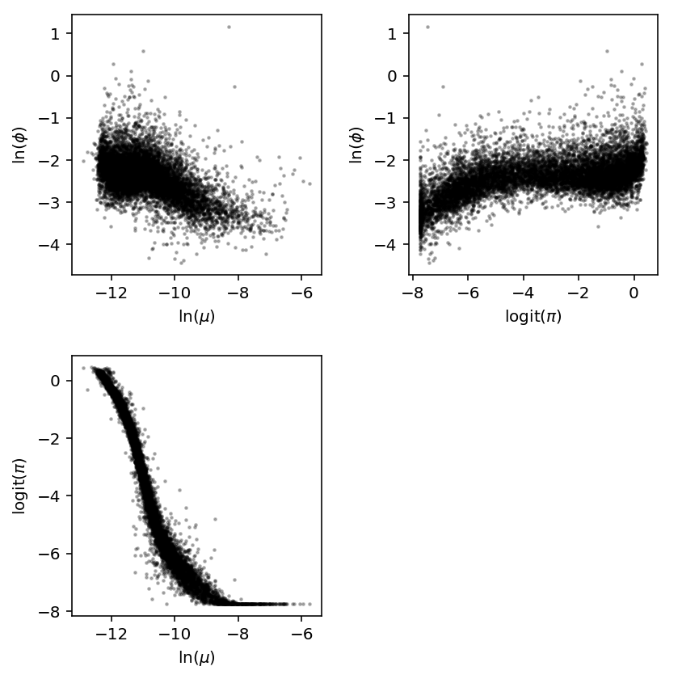
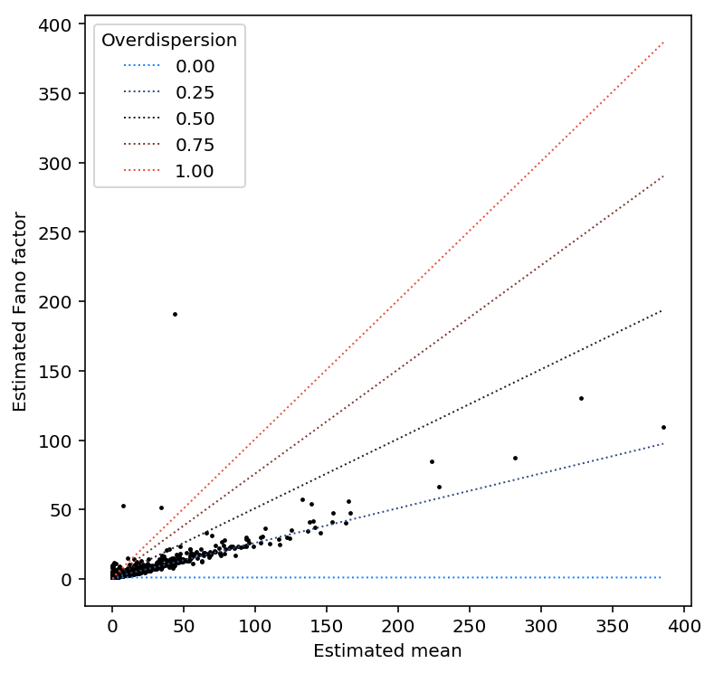
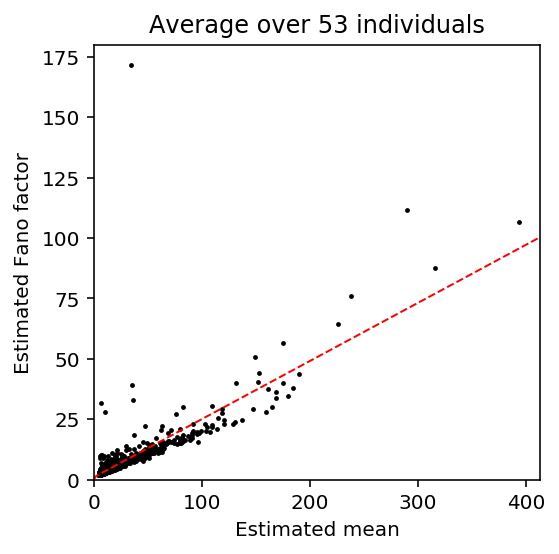
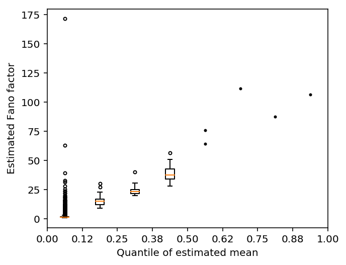

Mean/dispersion estimation
Introduction
We take a modular approach to call QTLs:
- Estimate a mean and a dispersion for each individual
- Treat the mean/dispersion as continuous phenotypes and perform QTL mapping
Here, we solve (1).
- We implement CPU-based ML estimation
- We estimate per-gene indexes of dispersion accounting for the fact that data came from multiple individuals
Model specification
Let \(r_{ijk}\) denote the number of molecules for individual \(i\), cell \(j\), gene \(k\). Let \(R_{ij}\) denote a size factor for each cell.
\[ r_{ijk} \sim \pi_{ik} \delta_0(\cdot) + (1 - \pi_{ik})\text{Poisson}(\cdot; R_{ij} \mu_{ik} u_{ijk}) \]
\[ u_{ijk} \sim \text{Gamma}(\cdot; \phi_{ik}^{-1}, \phi_{ik}^{-1}) \]
Here, \(\mu_{ik}\) is proportional to relative expression (Pachter 2011), and \(\phi_{ik}\) is the variance of expression noise.
Considering just the Poisson component, marginalizing out \(u\) yields the log likelihood:
\[ l(\cdot) = \ln(1 - \pi_{ik}) + r_{ijk} \ln\left(\frac{R_{ij}\mu_{ik}\phi_{ik}}{1 + R_{ij}\mu_{ik}\phi_{ik}}\right) - \phi_{ik}^{-1} \ln(1 + R_{ij}\mu_{ik}\phi_{ik}) + \ln \Gamma(r_{ijk} + \phi_{ik}^{-1}) - \ln \Gamma(r_{ijk} + 1) - \ln \Gamma(\phi^{-1}) \]
Then, marginalizing over the mixture yields the log likelihood:
\[ \ln p(r_{ijk} \mid \cdot) = \ln(\pi_{ik} + \exp(l(\cdot)))\ \text{if}\ r_{ijk} = 0 \]
\[ \ln p(r_{ijk} \mid \cdot) = l(\cdot)\ \text{otherwise} \]
We have enough observations per mean/dispersion parameter that simply minimizing the negative log likelihood should give reasonable estimates.
This model is equivalent to a model where we assume that the underlying rate is a point-Gamma mixture:
\[ r_{ijk} \mid \lambda_{ijk} \sim \mathrm{Poisson}(\cdot; R_{ij}\lambda_{ijk}) \]
\[ \lambda_{ijk} \sim \pi_{ik} \delta_0(\cdot) + (1 - \pi_{ik}) \text{Gamma}(\lambda_{ijk}; \phi_{ik}^{-1}, \phi_{ik}^{-1}\mu_{ik}^{-1}) \]
The Gamma component of this mixture corresponds to \(\mu_{ik}u_{ijk}\) in the model above. Considering just the Gamma component, marginalizing out \(\lambda\) yields the log likelihood:
\[ \tilde{l}(\cdot) = \ln(1 - \pi_{ik}) + r_{ijk} \ln\left(\frac{R_{ij}}{R_{ij} + \phi_{ik}^{-1}\mu_{ik}^{-1}} \right) + \phi_{ik}^{-1} \ln\left(\frac{\phi_{ik}^{-1}\mu_{ik}^{-1}}{R_{ij} + \phi_{ik}^{-1}\mu_{ik}^{-1}}\right) + \ln\Gamma(r_{ijk} + \phi_{ik}^{-1}) - \ln\Gamma(r_{ijk} + 1) - \ln\Gamma(\phi_{ik}^{-1}) \]
It is clear \(l = \tilde{l}\), and therefore the marginal likelihoods (over the mixture components) are also equal.
Tensorflow implementation
We optimize all of the parameters together, using one-hot encoding to map parameters to data points. This makes inference more amenable to running on the GPU.
Use tensorflow to automatically differentiate the negative log likelihood and
perform gradient descent.
def nb_llik(x, mean, inv_disp): """Log likelihood of x distributed as NB See Hilbe 2012, eq. 8.10 mean - mean (> 0) inv_disp - inverse dispersion (> 0) """ return (x * tf.log(mean / inv_disp) - x * tf.log(1 + mean / inv_disp) - inv_disp * tf.log(1 + mean / inv_disp) + tf.lgamma(x + inv_disp) - tf.lgamma(inv_disp) - tf.lgamma(x + 1)) def zinb_llik(x, mean, inv_disp, logodds): """Log likelihood of x distributed as ZINB See Hilbe 2012, eq. 11.12, 11.13 mean - mean (> 0) inv_disp - inverse dispersion (> 0) logodds - dropout log odds """ # Important identities: # log(x + y) = log(x) + softplus(y - x) # log(sigmoid(x)) = -softplus(-x) case_zero = -tf.nn.softplus(-logodds) + tf.nn.softplus(nb_llik(x, mean, inv_disp) + tf.nn.softplus(-logodds)) case_non_zero = -tf.nn.softplus(logodds) + nb_llik(x, mean, inv_disp) return tf.where(tf.less(x, 1), case_zero, case_non_zero) # https://github.com/junfengwen/AMSGrad/blob/a00e3f4bcb3ba16b2fe67c75dd8643670bded0c9/optimizers.py from tensorflow.python.framework import ops from tensorflow.python.ops import control_flow_ops from tensorflow.python.ops import math_ops from tensorflow.python.ops import gen_math_ops from tensorflow.python.ops import variable_scope from tensorflow.python.training import optimizer class AMSGrad(optimizer.Optimizer): """The AMSGrad algorithm in the paper Reddi, Kale, Kumar, On the Convergence of Adam and Beyond, ICLR 2018 https://openreview.net/forum?id=ryQu7f-RZ """ def __init__(self, learning_rate=0.001, beta1=0.9, beta2=0.999, epsilon=1e-8, use_locking=False, name="AMSGrad"): super(AMSGrad, self).__init__(use_locking, name) self._lr = learning_rate self._beta1 = beta1 self._beta2 = beta2 self._epsilon = epsilon self._lr_t = None self._beta1_t = None self._beta2_t = None self._epsilon_t = None self._beta1_power = None self._beta2_power = None def _create_slots(self, var_list): first_var = min(var_list, key=lambda x: x.name) create_new = self._beta1_power is None if create_new: with ops.colocate_with(first_var): self._beta1_power = variable_scope.variable(self._beta1, name="beta1_power", trainable=False) self._beta2_power = variable_scope.variable(self._beta2, name="beta2_power", trainable=False) # Create slots for the first and second moments. for v in var_list: # first moment est self._zeros_slot(v, "first_mom", self._name) # second moment est self._zeros_slot(v, "second_mom", self._name) self._zeros_slot(v, "second_mom_max", self._name) def _prepare(self): self._lr_t = ops.convert_to_tensor(self._lr) self._beta1_t = ops.convert_to_tensor(self._beta1) self._beta2_t = ops.convert_to_tensor(self._beta2) self._epsilon_t = ops.convert_to_tensor(self._epsilon) self._one_minus_beta1 = ops.convert_to_tensor(1. - self._beta1) self._one_minus_beta2 = ops.convert_to_tensor(1. - self._beta2) def _apply_dense(self, grad, var): # bias-corrected learning rate lr = self._lr_t * math_ops.sqrt(1. - self._beta2_power) / (1. - self._beta1_power) first_mom = self.get_slot(var, "first_mom") second_mom = self.get_slot(var, "second_mom") second_mom_max = self.get_slot(var, "second_mom_max") first_update = first_mom.assign(self._beta1_t * first_mom + self._one_minus_beta1 * grad, use_locking=self._use_locking) second_update = second_mom.assign(self._beta2_t * second_mom + self._one_minus_beta2 * math_ops.square(grad), use_locking=self._use_locking) # AMSGrad compared to ADAM second_max_update = second_mom_max.assign(gen_math_ops.maximum(second_mom_max, second_update)) var_update = var.assign_sub(lr * first_update / (math_ops.sqrt(second_max_update) + self._epsilon_t), use_locking=self._use_locking) return control_flow_ops.group(*[var_update, first_update, second_update, second_max_update]) def _apply_sparse(self, grad, var): # just a copy of the dense case, not properly implemented yet return self._apply_dense(grad, var) def _finish(self, update_ops, name_scope): # Update the power accumulators. with ops.control_dependencies(update_ops): with ops.colocate_with(self._beta1_power): update_beta1 = self._beta1_power.assign( self._beta1_power * self._beta1, use_locking=self._use_locking) update_beta2 = self._beta2_power.assign( self._beta2_power * self._beta2_t, use_locking=self._use_locking) return control_flow_ops.group(*update_ops + [update_beta1, update_beta2], name=name_scope) def fit(umi, onehot, size_factor, design, gene_dropout=False, ind_dropout=False, learning_rate=1e-2, max_epochs=1000): """Return estimated log mean and log dispersion. If fitting a zero-inflated model, additionally return dropout log odds. umi - count matrix (n x p; float32) onehot - mapping of individuals to cells (m x n; float32) size_factor - size factor vector (n x 1; float32) design - confounder matrix (n x q; float32) gene_dropout - fit one dropout parameter per gene ind_dropout - fit one dropout parameter per individual If ind_dropout is True, gene_dropout must be True, otherwise raises ArgumentError. Returns: log_mean - log mean parameter (m x p) log_disp - log dispersion parameter (m x p) dropout - dropout log odds (1 x p if gene_dropout, n x p if ind_dropout) """ n, p = umi.shape _, m = onehot.shape _, k = design.shape params = locals() graph = tf.Graph() with graph.as_default(), graph.device('/gpu:*'): size_factor = tf.Variable(size_factor, trainable=False) umi = tf.Variable(umi, trainable=False) onehot = tf.Variable(onehot, trainable=False) design = tf.Variable(design, trainable=False) mean = tf.exp(tf.Variable(tf.zeros([m, p]))) inv_disp = tf.exp(tf.Variable(tf.zeros([m, p]))) beta = tf.Variable(tf.zeros([k, p])) if gene_dropout: if ind_dropout: dropout_params = tf.Variable(tf.zeros([m, p])) dropout = tf.matmul(onehot, dropout_params) else: dropout_params = tf.Variable(tf.zeros([1, p])) dropout = dropout_params llik = tf.reduce_mean( zinb_llik(umi, size_factor * tf.matmul(onehot, mean) * tf.exp(tf.matmul(design, beta)), tf.matmul(onehot, inv_disp), dropout)) elif ind_dropout: raise ValueError('Cannot specify individual-specific dropout without gene-specific dropout') else: llik = tf.reduce_mean( nb_llik(umi, size_factor * tf.matmul(onehot, mean) * tf.exp(tf.matmul(design, beta)), tf.matmul(onehot, inv_disp))) train = AMSGrad(learning_rate=learning_rate).minimize(-llik) opt = [tf.log(mean), -tf.log(inv_disp)] if gene_dropout: opt.append(dropout_params) curr = float('-inf') with tf.Session() as sess: sess.run(tf.global_variables_initializer()) for i in range(max_epochs): _, update = sess.run([train, llik]) if not np.isfinite(update): raise tf.train.NanLossDuringTrainingError if not i % 500: print(i, update) return sess.run(opt)
Fit ZINB2
Estimate the parameters of the zero-inflated model assuming dropout per individual and gene.
<<zinb-imports>> <<tf-imports>> <<tf-zinb-impl>> <<recode-impl>> <<read-data-qc>> onehot = recode(annotations, 'chip_id') # These explain most PVE of circular pseudotime (ref. Joyce Hsiao) cell_cycle_genes = [ 'ENSG00000094804', # CDC6 'ENSG00000170312', # CDK1 'ENSG00000175063', # UBE2C 'ENSG00000131747', # TOP2A 'ENSG00000197061', # HIST1H4C ] cell_cycle = (umi.loc[cell_cycle_genes].values / annotations['mol_hs'].values).reshape(-1, 5) chip = recode(annotations, 'experiment') design = np.concatenate([chip, cell_cycle], axis=1) design -= design.mean(axis=0) design /= design.std(axis=0) mean, dispersion, dropout = fit( umi=umi.values.T.astype(np.float32), onehot=onehot.astype(np.float32), design=np.zeros((onehot.shape[0], 1)).astype(np.float32), size_factor=annotations['mol_hs'].astype(np.float32).values.reshape(-1, 1), gene_dropout=True, ind_dropout=True, learning_rate=5e-2, max_epochs=4000) index = umi.index header = sorted(set(annotations['chip_id'])) pd.DataFrame(mean.T, index=index, columns=header).to_csv('zi2-log-mu.txt.gz', sep=' ', compression='gzip') pd.DataFrame(dispersion.T, index=index, columns=header).to_csv('zi2-log-phi.txt.gz', sep=' ', compression='gzip') pd.DataFrame(dropout.T, index=index, columns=header).to_csv('zi2-logodds.txt.gz', sep=' ', compression='gzip')
sbatch --partition=gpu --gres=gpu:1 --mem=16G --time=60 --job-name=zinb2 --output=zinb2.out #!/bin/bash source activate scqtl python /project2/mstephens/aksarkar/projects/singlecell-qtl/code/tf-zinb.py
Submitted batch job 45796717
sbatch --partition=broadwl #!/bin/bash cat >.rsync-filter <<EOF + */ + zi2*.txt.gz - * EOF rsync -FFau . /project2/mstephens/aksarkar/projects/singlecell-qtl/data/density-estimation/
Submitted batch job 45796357
Simulation
<<zinb-imports>> <<tf-imports>> <<sim-impl2>> <<tf-zinb-impl>> def evaluate(num_samples, num_mols, num_trials=10): # This will be reset inside the simulation to generate counts, but we need to # fix it to get one design matrix for all the simulated genes np.random.seed(1000) design = np.random.normal(size=(num_samples * num_trials, 1)) # def simulate(num_samples, size=None, log_mu=None, log_phi=None, logodds=None, seed=None, design=None, fold=None): args = [(num_samples * num_trials, num_mols, log_mu, log_phi, logodds, None, design, fold) for log_mu in np.linspace(-12, -6, 7) for log_phi in np.linspace(-6, 0, 7) for logodds in np.linspace(-3, 3, 7) for fold in np.linspace(1, 1.25, 6)] umi = np.concatenate([simulate(*a)[0][:,:1] for a in args], axis=1) onehot = np.zeros((num_samples * num_trials, num_trials)) onehot[np.arange(onehot.shape[0]), np.arange(onehot.shape[0]) // num_samples] = 1 log_mu, log_phi, logodds = fit( umi=umi.astype(np.float32), onehot=onehot.astype(np.float32), design=design.astype(np.float32), size_factor=num_mols * np.ones((num_samples * num_trials, 1)).astype(np.float32), gene_dropout=True, ind_dropout=True, learning_rate=5e-2, max_epochs=4000) result = pd.DataFrame( [(a[0] // num_trials, int(a[1]), int(a[2]), int(a[3]), int(a[4]), a[-1], trial) for a in args for trial in range(num_trials)], columns=['num_samples', 'num_mols', 'log_mu', 'log_phi', 'logodds', 'fold', 'trial']) # Important: the results need to be transposed before flattening result['log_mu_hat'] = log_mu.ravel(order='F') result['log_phi_hat'] = log_phi.ravel(order='F') result['logodds_hat'] = logodds.ravel(order='F') result['mean'] = result['num_mols'] * np.exp(result['log_mu_hat']) result['var'] = result['mean'] + np.square(result['mean']) * np.exp(result['log_phi_hat']) log_cpm = np.log(np.ma.masked_values(umi.reshape(num_trials, -1, umi.shape[-1]), 0)) - np.log(num_mols) + 6 * np.log(10) result['mean_log_cpm'] = log_cpm.mean(axis=1).ravel(order='F') result['var_log_cpm'] = log_cpm.var(axis=1).ravel(order='F') return result res = pd.concat([evaluate(num_samples, num_mols) for num_samples in np.linspace(100, 1000, 5).astype(int) for num_mols in 1e3 * np.linspace(100, 1000, 5).astype(int)]) with sqlite3.connect("/project2/mstephens/aksarkar/projects/singlecell-qtl/browser/browser2.db") as conn: res.to_sql('simulation', conn, index=False, if_exists='replace')
sbatch --partition=gpu --gres=gpu:1 --mem=16G --job-name=tf-sim --output=sim.out #!/bin/bash source activate scqtl python /project2/mstephens/aksarkar/projects/singlecell-qtl/code/tf-sim.py
Submitted batch job 45713922
numpy/scipy implementation
Optimize the negative log-likelihood.
def log(x): """Numerically safe log""" return np.log(x + 1e-8) def sigmoid(x): """Numerically safe sigmoid""" lim = np.log(np.finfo(np.float64).resolution) return np.clip(sp.expit(x), lim, -lim) def nb(theta, x, size, onehot, design): """Return the per-data point log likelihood x ~ Poisson(size .* design' * theta[2 * m:k] * exp(onehot * theta[:m]) * u) u ~ Gamma(exp(onehot * theta[m:2 * m]), exp(onehot * theta[m:2 * m])) theta - (2 * m + k, 1) x - (n, 1) size - (n, 1) onehot - (n, m) design - (n, k) """ n, m = onehot.shape assert x.shape == (n,) assert size.shape == (n,) assert design.shape[0] == n assert theta.shape == (2 * m + design.shape[1],) mean = size * np.exp(onehot.dot(theta[:m]) + design.dot(theta[2 * m:])) assert mean.shape == (n,) inv_disp = onehot.dot(np.exp(theta[m:2 * m])) assert inv_disp.shape == (n,) return (x * log(mean / inv_disp) - x * log(1 + mean / inv_disp) - inv_disp * log(1 + mean / inv_disp) + sp.gammaln(x + inv_disp) - sp.gammaln(inv_disp) - sp.gammaln(x + 1)) def _nb(theta, x, size, onehot, design=None): """Return the mean negative log likelihood of x""" return -nb(theta, x, size, onehot, design).mean() def zinb(theta, x, size, onehot, design=None): """Return the mean negative log likelihood of x""" n, m = onehot.shape logodds, theta = theta[:m], theta[m:] case_non_zero = -np.log1p(np.exp(onehot.dot(logodds))) + nb(theta, x, size, onehot, design) case_zero = np.logaddexp(onehot.dot(logodds - np.log1p(np.exp(logodds))), case_non_zero) return -np.where(x < 1, case_zero, case_non_zero).mean() def _fit_gene(chunk, onehot, design=None): n, m = onehot.shape assert chunk.shape[0] == n # We need to take care here to initialize mu=-inf for all zero observations x0 = np.log((onehot * chunk[:,:1]).sum(axis=0) / onehot.sum(axis=0)) - np.log(np.ma.masked_values(onehot, 0) * chunk[:,1:]).mean(axis=0).compressed() x0 = np.hstack((x0, np.zeros(m))) if design is not None: assert design.shape[0] == n design -= design.mean(axis=0) x0 = np.hstack((x0, np.zeros(design.shape[1]))) res0 = so.minimize(_nb, x0=x0, args=(chunk[:,0], chunk[:,1], onehot, design)) res = so.minimize(zinb, x0=list(np.zeros(m)) + list(res0.x), args=(chunk[:,0], chunk[:,1], onehot, design)) if res0.fun < res.fun: # This isn't a likelihood ratio test. Numerically, our implementation of # ZINB can't represent pi = 0, so we need to use a separate implementation # for it log_mu = res0.x[:m] neg_log_phi = res0.x[m:2 * m] logit_pi = np.zeros(m) logit_pi.fill(-np.inf) else: logit_pi = res.x[:m] log_mu = res.x[m:2 * m] neg_log_phi = res.x[2 * m:3 * m] mean_by_sample = chunk[:,1] * onehot.dot(np.exp(log_mu)) var_by_sample = mean_by_sample + np.square(mean_by_sample) * onehot.dot(np.exp(-neg_log_phi)) mean_by_ind = np.ma.masked_equal(onehot * mean_by_sample.reshape(-1, 1), 0).mean(axis=0).filled(0) var_by_ind = np.ma.masked_equal(onehot * (np.square(mean_by_sample - onehot.dot(mean_by_ind)) + var_by_sample).reshape(-1, 1), 0).mean(axis=0).filled(0) return [log_mu, -neg_log_phi, logit_pi, mean_by_ind, var_by_ind] def fit_gene(chunk, bootstraps=100): orig = _fit_gene(chunk) B = [] for _ in range(bootstraps): B.append(_fit_gene(chunk[np.random.choice(chunk.shape[0], chunk.shape[0], replace=True)])) se = np.array(B)[:,:2].std(axis=0) return orig + list(se.ravel())
Computing analytic SE runs into numerical problems.
def _pois(theta, x, size): mean = np.exp(theta) mean *= size return (x * log(mean) - mean - sp.gammaln(x + 1)).mean() def _pois_jac(theta, x, size): mean = np.exp(theta) return mean * (x / mean - size).mean() def _nb_jac(theta, x, size): mean, inv_disp = np.exp(theta) T = (1 + size * mean / inv_disp) return mean * (x / mean - size / inv_disp * (x + inv_disp) / T).mean() def check_gradients(x, f, df, args=None, num_trials=100): x = np.array(x) y = f(x, *args) analytic_diff = df(x, *args) error = [] for i in range(num_trials): eps = np.random.normal(scale=1e-4, size=x.shape) num_diff = (f(x + eps, *args) - y) / eps error.append(abs(num_diff - analytic_diff)) return np.array(error)
Simulation
Check the parameter estimation on simulated data.
Assuming simulated confounders \(x\) are isotropic Gaussian, we can derive the scale of \(\beta\) to achieve a specified fold-change in relative abundance:
\[ x \sim N(0, 1) \]
Letting \(\tau\) denote precision:
\[ \beta \sim N(0, \tau) \]
\[ x\beta \sim N(0, 1 + \tau) \]
\[ \mathbb{E}[x\beta] = y = \exp\left(\frac{1}{2 (1 + \tau)}\right) \]
\[ \tau = \frac{1 - 2 \ln y}{2 \ln y} \]
def simulate(num_samples, size=None, log_mu=None, log_phi=None, logodds=None, seed=None, design=None, fold=None): if seed is None: seed = 0 np.random.seed(seed) if log_mu is None: log_mu = np.random.uniform(low=-12, high=-8) if log_phi is None: log_phi = np.random.uniform(low=-6, high=0) if size is None: size = 1e5 if logodds is None: prob = np.random.uniform() else: prob = sp.expit(logodds) if design is None: design = np.random.normal(size=(num_samples, 1)) else: assert design.shape[0] == num_samples if fold is None or np.isclose(fold, 1): beta = np.array([[0]]) else: assert fold > 1 beta = np.random.normal(size=(design.shape[1], 1), scale=2 * np.log(fold) / (1 - 2 * np.log(fold))) n = np.exp(-log_phi) p = 1 / (1 + size * np.exp(log_mu + design.dot(beta) + log_phi)).ravel() x = np.where(np.random.uniform(size=num_samples) < prob, 0, np.random.negative_binomial(n=n, p=p, size=num_samples)) return np.vstack((x, size * np.ones(num_samples))).T, design def batch_design_matrix(num_samples, num_batches): """Return a matrix of binary indicators representing batch assignment""" design = np.zeros((num_samples, num_batches)) design[np.arange(num_samples), np.random.choice(num_batches, size=num_samples)] = 1 return design def evaluate(num_samples, num_mols, log_mu, log_phi, logodds, fold, trial): x, design = simulate(num_samples=num_samples, size=num_mols, log_mu=log_mu, log_phi=log_phi, logodds=logodds, design=None, fold=fold, seed=trial) onehot = np.ones((num_samples, 1)) keys = ['num_samples', 'num_mols', 'log_mu', 'log_phi', 'logodds', 'trial', 'fold', 'log_mu_hat', 'log_phi_hat', 'logodds_hat', 'mean', 'var'] result = [num_samples, num_mols, log_mu, log_phi, logodds, trial, fold] + [param[0] for param in _fit_gene(x, onehot, design)] result = {k: v for k, v in zip(keys, result)} eps = .5 / num_mols log_cpm = (np.log(np.ma.masked_values(x[:,0], 0) + eps) - np.log(x[:,1] + 2 * eps) + 6 * np.log(10)).compressed() result['mean_log_cpm'] = log_cpm.mean() result['var_log_cpm'] = log_cpm.var() return result
Check the implementation actually worked.
x1, design1 = simulate(num_samples=1000, size=1e5, log_mu=-8, log_phi=-6, logodds=-3, seed=0, design=batch_design_matrix(1000, 2), fold=1.1) x2, design2 = simulate(num_samples=1000, size=1e5, log_mu=-9, log_phi=-6, logodds=-3, seed=0, design=batch_design_matrix(1000, 2), fold=1.1)
x = np.vstack((x1, x2)) design = np.vstack((design1, design2)) onehot = np.zeros((2000, 2)) onehot[:1000,0] = 1 onehot[1000:,1] = 1
so.minimize(_nb, np.zeros(6), (x[:,0], x[:,1], onehot, design - design.mean(axis=0)))
fun: 3.7693708861600173 hess_inv: array([[ 2.95492914e-01, -2.26820271e-02, -6.88886930e-02, 3.66568258e-02, -1.35008739e-02, 1.33990791e-02], [-2.26820271e-02, 2.76704513e-01, 4.55879587e-03, 6.39326308e-02, -2.03557128e-02, 2.03675939e-02], [-6.88886930e-02, 4.55879587e-03, 8.40491928e+00, 3.47009715e-01, 1.14991770e-02, -1.17004131e-02], [ 3.66568258e-02, 6.39326308e-02, 3.47009715e-01, 1.93344347e+01, -8.18164095e-03, 6.19982324e-03], [-1.35008739e-02, -2.03557128e-02, 1.14991770e-02, -8.18164095e-03, 6.45950264e-01, 3.54059802e-01], [ 1.33990791e-02, 2.03675939e-02, -1.17004131e-02, 6.19982324e-03, 3.54059802e-01, 6.45930363e-01]]) jac: array([ 6.82473183e-06, 8.34465027e-06, 1.07288361e-06, 8.34465027e-07, 3.75509262e-06, -4.08291817e-06]) message: 'Optimization terminated successfully.' nfev: 280 nit: 30 njev: 35 status: 0 success: True x: array([-7.79891405, -8.79063513, 2.05714587, 2.56621654, 0.16492975, -0.16494031])
so.minimize(zinb, np.zeros(8), (x[:,0], x[:,1], onehot, design - design.mean(axis=0)))
fun: 3.1120455141161147 hess_inv: array([[ 3.91509877e+01, -6.82255452e+00, 3.56651927e-03, -3.60544664e-03, 1.89769061e-03, -3.67396633e-05, -5.05335375e-03, 2.07017842e-03], [-6.82255452e+00, 3.63677578e+01, -2.89665006e-03, 1.89766982e-03, -1.15515147e-03, 1.19995032e-04, 4.03751660e-03, -1.28881738e-03], [ 3.56651927e-03, -2.89665006e-03, 1.00060484e-05, -4.75805864e-06, -1.52866758e-06, -9.78212511e-07, -7.93108063e-09, -9.33841063e-06], [-3.60544664e-03, 1.89766982e-03, -4.75805864e-06, 9.43027846e-06, -1.92946942e-08, -1.76906831e-07, -3.04179309e-07, 5.35291550e-06], [ 1.89769061e-03, -1.15515147e-03, -1.52866758e-06, -1.92946942e-08, 2.96476652e-06, 1.16116940e-06, -4.91977746e-06, 2.37359794e-06], [-3.67396633e-05, 1.19995032e-04, -9.78212511e-07, -1.76906831e-07, 1.16116940e-06, 1.48628846e-06, -1.36236523e-06, 7.97280863e-07], [-5.05335375e-03, 4.03751660e-03, -7.93108063e-09, -3.04179309e-07, -4.91977746e-06, -1.36236523e-06, 1.60495775e-05, -3.42044027e-06], [ 2.07017842e-03, -1.28881738e-03, -9.33841063e-06, 5.35291550e-06, 2.37359794e-06, 7.97280863e-07, -3.42044027e-06, 1.96937195e-05]]) jac: array([-2.98023224e-07, 7.15255737e-07, 9.99987125e-04, -3.08364630e-04, 5.21874428e-03, 7.71874189e-03, 1.99797750e-03, 9.57250595e-05]) message: 'Desired error not necessarily achieved due to precision loss.' nfev: 1942 nit: 80 njev: 193 status: 2 success: False x: array([-3.07858135, -3.07854889, -7.75387174, -8.74631249, 12.91019024, 13.26839552, 0.04538458, -0.28914969])
_fit_gene(x, onehot)
[array([-7.74001987, -8.73200364]), array([-3.50778747, -3.59795896]), array([-3.07854886, -3.07859407]), array([43.50629319, 16.13388663]), array([100.22044275, 23.26084595])]
_fit_gene(x, onehot, design)
[array([-7.74986202, -8.7418084 ]), array([-6.82644387, -6.09474886]), array([-3.0785687 , -3.07861418]), array([43.08019804, 15.97647082]), array([45.09331255, 16.55197158])]
Check what happens on all zero data.
x = np.concatenate((np.zeros((1000, 1)), 1e5 * np.ones((1000, 1))), axis=1) onehot = np.ones((1000, 1))
np.log((onehot * x[:,:1]).sum(axis=0) / onehot.sum(axis=0)) - np.log(np.ma.masked_values(onehot, 0) * x[:,1:]).mean(axis=0).compressed()
array([-inf])
so.minimize(_nb, x0=(-np.inf, 0), args=(x[:,0], x[:,1], onehot))
fun: 9.999999889225288e-09 hess_inv: array([[1, 0], [0, 1]]) jac: array([0.00000000e+00, 1.00000003e-08]) message: 'Optimization terminated successfully.' nfev: 4 nit: 0 njev: 1 status: 0 success: True x: array([-inf, 0.])
_fit_gene(x, onehot)
[array([-inf]), array([-0.]), array([0.]), array([0.]), array([0.])]
_fit_gene(x, onehot, design)
[array([-7.75254245, -8.74529525]), array([-7.38635243, -6.45950176]), array([-3.07849171, -3.07866706]), array([42.9648789 , 15.92086032]), array([44.10874472, 16.3176927 ])]
Check the end-to-end evaluation.
evaluate(num_samples=100, num_mols=1e5, log_mu=-8, log_phi=-6, logodds=-3, fold=1.1, trial=0)
{'fold': 1.1,
'log_mu': -8,
'log_mu_hat': -7.980952099176061,
'log_phi': -6,
'log_phi_hat': -5.681342153408702,
'logodds': -3,
'logodds_hat': -2.7515411255776483,
'mean': 34.19137317124226,
'mean_log_cpm': 5.8224834413816415,
'num_mols': 100000.0,
'num_samples': 100,
'trial': 0,
'var': 38.1766412350187,
'var_log_cpm': 0.23075096605184894}
%timeit evaluate(num_samples=5000, num_mols=1e5, log_mu=-8, log_phi=-6, logodds=-3, fold=1.1, trial=0)
1.41 s ± 449 µs per loop (mean ± std. dev. of 7 runs, 1 loop each)
Investigate what happens as the number of confounders increases.
design = np.random.normal(size=(300, 20)) x, _ = simulate(num_samples=300, size=1e5, log_mu=-8, log_phi=-6, logodds=-3, seed=0, design=design, fold=1.1) _fit_gene(x, design)
[-8.00649125343069, -6.410804905890429, -2.99891159295469, 33.32921072894424, 35.15509338485383]
Run the simulation on 28 CPUs.
<<zinb-imports>> import multiprocessing as mp import sqlite3 <<np-zinb-impl2>> <<sim-impl2>> args = [(num_samples, num_mols, log_mu, log_phi, logodds, fold, trial) for num_samples in np.linspace(100, 1000, 5).astype(int) for num_mols in 1e3 * np.linspace(100, 1000, 5).astype(int) for log_mu in np.linspace(-12, -6, 7) for log_phi in np.linspace(-6, 0, 7) for logodds in np.linspace(-3, 3, 7) for fold in np.linspace(1, 1.25, 6) for trial in range(10)] with mp.Pool() as pool: result = pd.DataFrame.from_dict(pool.starmap(evaluate, args)) with sqlite3.connect('/project2/mstephens/aksarkar/projects/singlecell-qtl/browser/browser.db') as conn: result.to_sql(name='simulation', con=conn, index=False, if_exists='replace') conn.execute('create index ix_simulation on simulation(num_samples, num_mols);')
sbatch --partition=broadwl --mem=8G --job-name sim -n1 -c28 --exclusive --out sim.out #!/bin/bash source activate scqtl python /project2/mstephens/aksarkar/projects/singlecell-qtl/code/sim.py
Submitted batch job 45559291
Use this to check the parameter estimation for a particular gene/individual.
def extract_data(ind, gene): with sqlite3.connect('/project2/mstephens/aksarkar/projects/singlecell-qtl/browser/browser.db') as conn: umi = pd.read_sql("""select umi.value, annotation.size from umi, annotation where annotation.chip_id == ? and gene == ? and umi.sample == annotation.sample;""", con=conn, params=(ind, gene)) return umi
Shard the data to parallelize over nodes. During this pass, write the data out to the database.
Important notes:
- We need to use the actual number of molecules detected as the size factor, not the sum of QC'ed counts
- We need to estimate relative abundance for all genes (to match bulk), not just those which passed QC
- We need to recode categorical covariates as binary indicators. Although
over the entire data set the number of indicators (in particular,
experiment) might be larger than the number of observations, for each subproblem it will not be.
Write the annotations to the database.
keep_samples = pd.read_table('/project2/mstephens/aksarkar/projects/singlecell-qtl/data/quality-single-cells.txt', index_col=0, header=None) annotations = pd.read_table('/project2/mstephens/aksarkar/projects/singlecell-qtl/data/scqtl-annotation.txt') annotations['sample'] = annotations.apply(lambda x: '{chip_id}.{experiment:08d}.{well}'.format(**dict(x)), axis=1) annotations['size'] = annotations['mol_hs'] annotations = annotations.loc[keep_samples.values.ravel(), ['sample', 'chip_id', 'size']] with sqlite3.connect('/project2/mstephens/aksarkar/projects/singlecell-qtl/browser/browser.db') as conn: annotations.to_sql(name='annotation', con=conn, if_exists='replace') conn.execute('create index ix_annotation on annotation(chip_id, sample);')
Recode categorical variables as binary indicators.
def recode(annotations, key): n = annotations.shape[0] cat = sorted(set(annotations[key])) onehot = np.zeros((n, len(cat))) onehot[np.arange(n), annotations[key].apply(cat.index)] = 1 return onehot
Check that we will have enough data points to actually estimate effects:
annotations[keep_samples.values.ravel()].groupby('chip_id').apply(lambda x: pd.Series(recode(x, 'experiment').shape)).describe()
0 1 count 54.000000 54.000000 mean 96.685185 5.500000 std 40.056952 1.969101 min 19.000000 2.000000 25% 78.000000 4.000000 50% 88.500000 5.000000 75% 102.250000 6.750000 max 281.000000 14.000000
Show that batch is a linear combination of experiment.
design = np.concatenate([recode(annotations, k) for k in ('batch', 'experiment')], axis=1) u, d, v = np.linalg.svd(design) design.shape[1] - (d > 1e-2).sum()
6
<<zinb-imports>> <<write-annotation-impl>> i = 0 with sqlite3.connect('/project2/mstephens/aksarkar/projects/singlecell-qtl/browser/browser.db') as conn: conn.execute('drop table if exists umi;') for chunk in pd.read_table('/project2/mstephens/aksarkar/projects/singlecell-qtl/data/scqtl-counts.txt.gz', index_col=0, chunksize=1000): print('Processing chunk {}'.format(i)) chunk = (chunk .loc[:,keep_samples.values.ravel()]) if not chunk.empty: chunk = (chunk .reset_index() .melt(id_vars='gene', var_name='sample') .merge(annotations, on='sample') .sort_values(['gene', 'chip_id', 'sample'])) chunk.to_csv('/scratch/midway2/aksarkar/singlecell/density-estimation/chunk-{}.txt.gz'.format(i), columns=['gene', 'chip_id', 'sample', 'value', 'size'], compression='gzip', sep='\t') chunk[['gene', 'sample', 'value']].to_sql(name='umi', con=conn, index=False, if_exists='append') i += 1 del chunk conn.execute('create index ix_umi on umi(gene, sample);')
sbatch --partition=broadwl --mem=8G --job-name shard --out shard.out #!/bin/bash source activate scqtl python /project2/mstephens/aksarkar/projects/singlecell-qtl/code/shard.py
Submitted batch job 45561618
Process each chunk in parallel.
def compute_breaks(chunk, by_ind=False): # Each subproblem has fixed size, so we can just split on integer indices # (instead of grouping) num_genes = len(set(chunk['gene'])) num_samples = len(set(chunk['sample'])) breaks = num_samples * np.arange(num_genes).reshape(-1, 1) if by_ind: num_samples_per_ind = chunk.iloc[:num_samples]['chip_id'].value_counts().sort_index().values # This can't be written += because of broadcasting breaks = breaks + np.cumsum(num_samples_per_ind).reshape(1, -1) else: # We need to get the right end point of each subproblem (exclusive) breaks += num_samples return breaks.ravel()
<<zinb-imports>> import argparse import gzip import os import multiprocessing as mp import sqlite3 <<np-zinb-impl2>> <<recode-impl>> <<process-chunk-impl>> keep_samples = pd.read_table('/project2/mstephens/aksarkar/projects/singlecell-qtl/data/quality-single-cells.txt', index_col=0, header=None) annotations = pd.read_table('/project2/mstephens/aksarkar/projects/singlecell-qtl/data/scqtl-annotation.txt') annotations = annotations[keep_samples.values.ravel()] onehot = recode(annotations, 'chip_id') design = np.concatenate([recode(annotations, k) for k in ('batch', 'experiment')], axis=1) with mp.Pool() as pool: chunk = pd.read_table('/scratch/midway2/aksarkar/singlecell/density-estimation/chunk-{}.txt.gz'.format(os.getenv('SLURM_ARRAY_TASK_ID'))) breaks = compute_breaks(chunk) res = pool.starmap( _fit_gene, zip(np.split(chunk[['value', 'size']].values, breaks[:-1]), (onehot for b in breaks), (design for b in breaks))) with gzip.open('/scratch/midway2/aksarkar/singlecell/density-estimation/result-{}.txt.gz'.format(os.getenv('SLURM_ARRAY_TASK_ID')), 'wt') as f: for b, est in zip(breaks, res): gene = chunk.iloc[b - 1]['gene'] for ind, record in zip(sorted(set(annotations['chip_id'])), zip(*est)): print(gene, ind, *record, sep='\t', file=f)
sbatch --partition=broadwl --job-name="np-zinb" --mem=8G -a 0-20 -n1 -c28 --exclusive #!/bin/bash source activate scqtl python /project2/mstephens/aksarkar/projects/singlecell-qtl/code/zinb.py
Submitted batch job 45588176
Populate the database.
with sqlite3.connect('/project2/mstephens/aksarkar/projects/singlecell-qtl/browser/browser.db') as conn: conn.execute('drop table if exists params;') for i in range(21): for chunk in pd.read_table('/scratch/midway2/aksarkar/singlecell/density-estimation/result-{}.txt.gz'.format(i), sep=' ', header=None, chunksize=1000): chunk.columns = ['gene', 'ind', 'log_mu', 'log_phi', 'logodds', 'mean', 'var', 'log_mu_se', 'log_phi_se'] chunk.to_sql(name='params', con=conn, index=False, if_exists='append') conn.execute('create index ix_params on params(gene, ind);')
Parameter distributions
The simulation reveals the method has undesirable behavior when the proportion of zeros is too large and mean is too small.
Read the estimated parameters.
log_mu = pd.read_table('/project2/mstephens/aksarkar/projects/singlecell-qtl/data/density-estimation/without-cell-cycle/zi2-log-mu.txt.gz', index_col=0, sep=' ') log_phi = pd.read_table('/project2/mstephens/aksarkar/projects/singlecell-qtl/data/density-estimation/without-cell-cycle/zi2-log-phi.txt.gz', index_col=0, sep=' ') logodds = pd.read_table('/project2/mstephens/aksarkar/projects/singlecell-qtl/data/density-estimation/without-cell-cycle/zi2-logodds.txt.gz', sep=' ', index_col=0)
Look at the joint distribution.
J = (log_mu.agg(np.mean, axis=1).to_frame() .merge(log_phi.agg(np.mean, axis=1).to_frame(), left_index=True, right_index=True) .rename(columns={'0_x': 'log_mu', '0_y': 'log_phi'}) .merge(logodds.agg(np.mean, axis=1).to_frame(), left_index=True, right_index=True) .rename(columns={0: 'logodds'})) J.head()
log_mu log_phi logodds gene ENSG00000000003 -9.441596 -2.501993 -7.015090 ENSG00000000419 -9.906777 -2.812004 -6.547979 ENSG00000000457 -11.986061 -1.406747 0.337841 ENSG00000000460 -11.033319 -2.387189 -2.911735 ENSG00000001036 -11.051643 -2.351120 -2.723858
plt.clf() plt.gcf().set_size_inches(9, 9) fig, ax = plt.subplots(2, 2, gridspec_kw={'width_ratios': [0.5, 0.5], 'height_ratios': [0.5, 0.5]}) ax[0][0].scatter(J['log_mu'], J['log_phi'], c='k', s=2, alpha=0.25) ax[0][0].set_xlabel('$\ln(\mu)$') ax[0][0].set_ylabel('$\ln(\phi)$') ax[1][0].scatter(J['log_mu'], J['logodds'], c='k', s=2, alpha=0.25) ax[1][0].set_xlabel('$\ln(\mu)$') ax[1][0].set_ylabel('$\mathrm{logit}(\pi)$') ax[0][1].scatter(J['logodds'], J['log_phi'], c='k', s=2, alpha=0.25) ax[0][1].set_xlabel('$\mathrm{logit}(\pi)$') ax[0][1].set_ylabel('$\ln(\phi)$') ax[1][1].axis('off') fig.tight_layout()

Effect of confounding
Estimate proportion of variance explained by confounders by estimating the average reduction in heterogeneity (residual variance).
log_phi0 = pd.read_table('/project2/mstephens/aksarkar/projects/singlecell-qtl/data/density-estimation/without-confounders/zi2-log-phi.txt.gz', index_col=0, sep=' ') log_phi1 = pd.read_table('/project2/mstephens/aksarkar/projects/singlecell-qtl/data/density-estimation/without-cell-cycle/zi2-log-phi.txt.gz', index_col=0, sep=' ') log_phi2 = pd.read_table('/project2/mstephens/aksarkar/projects/singlecell-qtl/data/density-estimation/with-cell-cycle-genes/zi2-log-phi.txt.gz', index_col=0, sep=' ')
1 - (log_phi1 / log_phi0).mean().mean()
0.4349981749938848
1 - (log_phi2 / log_phi1).mean().mean()
0.0
Estimate how much the mean changes due to confounding.
log_mu0 = pd.read_table('/project2/mstephens/aksarkar/projects/singlecell-qtl/data/density-estimation/without-confounders/zi2-log-mu.txt.gz', index_col=0, sep=' ') log_mu1 = pd.read_table('/project2/mstephens/aksarkar/projects/singlecell-qtl/data/density-estimation/without-cell-cycle/zi2-log-mu.txt.gz', index_col=0, sep=' ') log_mu2 = pd.read_table('/project2/mstephens/aksarkar/projects/singlecell-qtl/data/density-estimation/with-cell-cycle-genes/zi2-log-mu.txt.gz', index_col=0, sep=' ')
np.exp(log_mu0 - log_mu1).describe().loc['mean'].describe()
count 54.000000 mean 1.334900 std 0.070728 min 1.195521 25% 1.280344 50% 1.343722 75% 1.370947 max 1.509227 Name: mean, dtype: float64
np.exp(log_mu1 - log_mu2).describe().loc['mean'].describe()
count 54.0 mean 1.0 std 0.0 min 1.0 25% 1.0 50% 1.0 75% 1.0 max 1.0 Name: mean, dtype: float64
Mean-variance relationship by individual
Read the estimated parameters.
with sqlite3.connect('/project2/mstephens/aksarkar/projects/singlecell-qtl/browser/browser.db') as conn: params = pd.read_sql('select * from params;', conn)
Plot the mean-variance relationship for one individual.
subset = params[params['ind'] == 'NA18501'] subset = subset[subset['mean'] > 0] grid = np.linspace(subset['mean'].min(), subset['mean'].max(), 200) plt.clf() plt.gcf().set_size_inches(6, 6) plt.scatter(subset['mean'], subset['var'] / subset['mean'], s=2, c='k') for phi in np.linspace(0, 1, 5): plt.plot(grid, (grid + np.square(grid) * phi) / (grid + 1e-8), label='{:.2f}'.format(phi), c=colorcet.cm['bkr'](phi), ls=':', lw=1) plt.legend(title='Overdispersion') plt.xlabel('Estimated mean') plt.ylabel('Estimated Fano factor')
Text(0,0.5,'Estimated Fano factor')

Per-gene dispersion
The index of dispersion for observed data \(r_{ijk}\) at gene \(k\) is:
\[ D_k = \frac{V[r_{ijk}]}{E[r_{ijk}]} \]
where expectations (variances) are taken over individuals \(i\) and cells \(j\).
Let \(g_{ijk}\) denote the zero-inflated negative binomial density as defined above. Then, we have:
\[ r_{ijk} \sim \sum_{ijk} \frac{1}{N} g_{ijk}(\cdot) \]
Fixing gene \(k\), the mixture density has expectation:
\[ \mu_k = \frac{1}{N} \sum E[r_{ijk}] \]
and variance (Frühwirth-Schnatter 2006):
\[ \sigma^2_k = \frac{1}{N} \sum (E[r_{ijk}] - \mu_k)^2 + V[r_{ijk}] \]
Fixing individual \(i\) and cell \(j\), we have:
\[ E[r_{ijk}] = R_{ij} \mu_{ik} \]
\[ V[r_{ijk}] = \left(R_{ij} \mu_{ik} + (R_{ij} \mu_{ik})^2 \phi_{ik}\right) \]
Here, we ignore the factor of \((1 - \pi_{ik})\) under the assumption that excess zeros do not reflect biology.
with sqlite3.connect('/project2/mstephens/aksarkar/projects/singlecell-qtl/browser/browser.db') as conn: params = pd.read_sql('select * from params;', conn) gene_params = params.groupby('gene').apply(lambda x: pd.Series([x['mean'].mean(), (np.square(x['mean'] - x['mean'].mean()) + x['var']).mean()]))
Plot the mean-variance relationship over all genes, estimated using all of the data and accounting for the fact that data came from different individuals.
subset = gene_params[gene_params[0] > 0] subset.columns = ['mean', 'var'] lim = [subset['mean'].min(), subset['mean'].max()] grid = np.linspace(*lim, num=200) plt.clf() plt.gcf().set_size_inches(6, 6) plt.scatter(subset['mean'], subset['var'] / subset['mean'], s=2, c='k') for phi in np.geomspace(.1, 2, 5): plt.plot(grid, (grid + np.square(grid) * phi) / (grid + 1e-8), label='{:.2f}'.format(phi), c=colorcet.cm['bkr'](phi), ls=':', lw=1) plt.legend(title='Overdispersion') plt.xlim(lim) plt.ylim(lim) plt.xlabel('Estimated mean') _ = plt.ylabel('Estimated Fano factor')

Bin the data and plot the distribution by bin.
n_bin = 8 subset['bin'] = pd.cut(subset['mean'], n_bin) subset['fano'] = subset['var'] / subset['mean'] plt.clf() plt.gcf().set_size_inches(5, 4) for i, (k, g) in enumerate(subset.groupby('bin')): if len(g) < 10: plt.scatter((i + .5) * np.ones(g['fano'].shape[0]), g['fano'], c='k', s=4, label=k) else: plt.boxplot(g['fano'], positions=[i + .5], sym='.', widths=.25) plt.xticks(np.arange(n_bin + 1), ['{:.2f}'.format(x) for x in np.linspace(0, 1, n_bin + 1)]) plt.xlim(0, n_bin) plt.xlabel('Quantile of estimated mean') _ = plt.ylabel('Estimated Fano factor')
